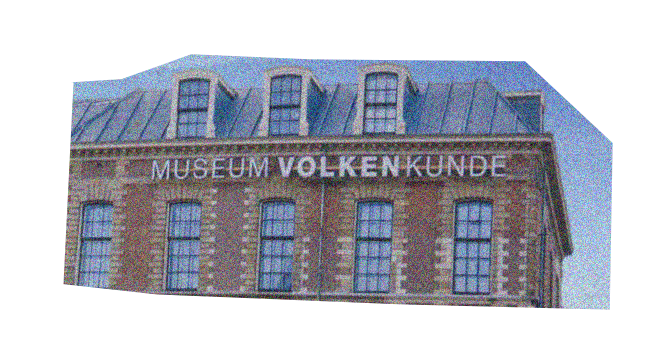
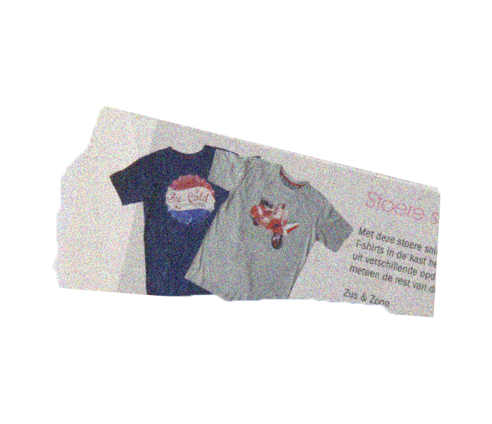
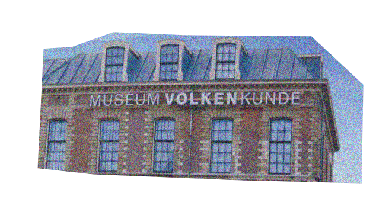
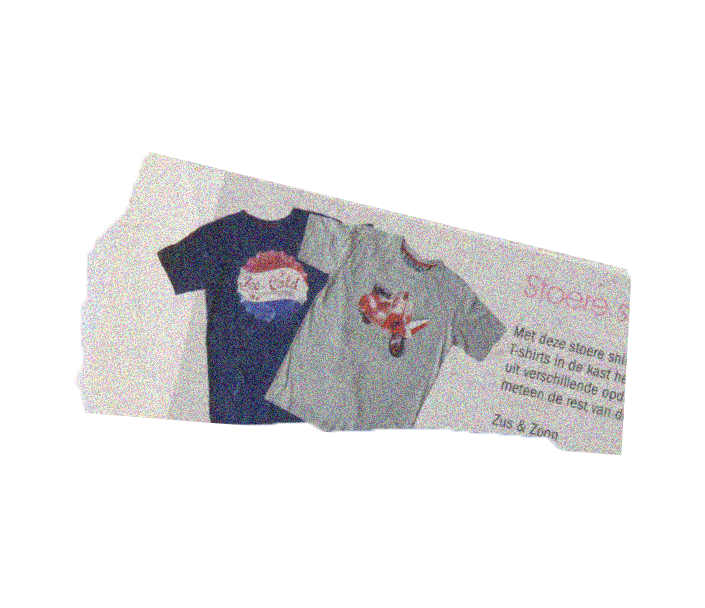

The small town I’m going to live, Leiden. It is a peaceful student town with small stores, big windmills, long canals and walls with poetry in different languages written all over them. As there used to be the house of Siebold, a Dutch botanist, physicist and biological researcher, and Leiden University where the Department of Japanese is very well-known, Leiden is a place that is strongly related to Japanese culture and history as well. The whole city comprised of academic buildings and museums.


 


